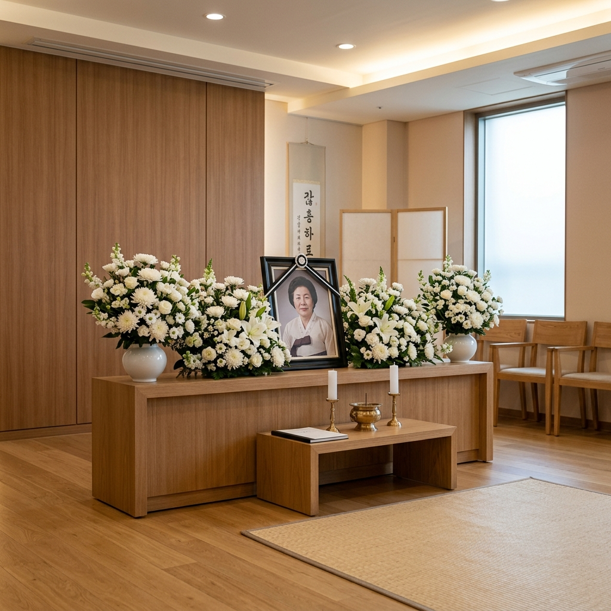
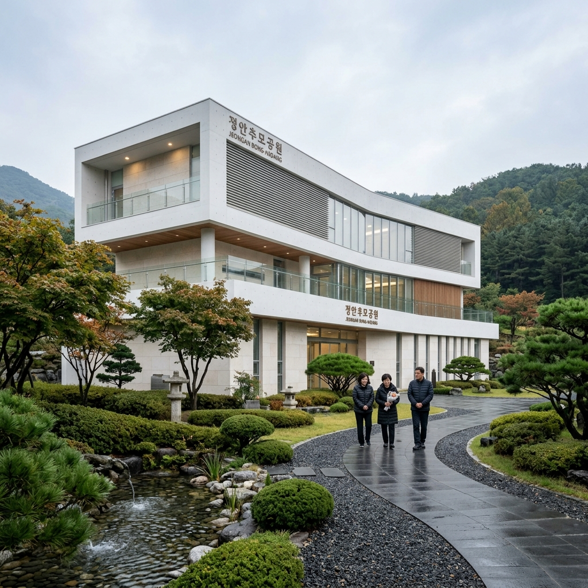

장례식장 비용 현실 — 빈소·화장·납골당 총 얼마 드나, 통상 범위
📌 핵심 요약
장례는 갑작스럽게 맞닥뜨리는 상황이라 사전에 비용을 알아두는 것이 매우 중요합니다. 준비 없이 현장에서 결정하면 과다 지출로 이어지기 쉽습니다.
국내 장례 비용은 빈소 대여·장례식장 이용료 + 장의 용품(관·수의 등) + 음식·접대비 + 화장 또는 매장 비용 + 납골당(봉안당) 비용으로 구성됩니다. 수도권 기준 소형 장례는 약 700~1,000만 원, 중형은 1,200~1,800만 원이 통상 범위입니다.
이 글에서 각 항목별 비용 범위를 현실적으로 안내하고, 비용 절감 방법과 주의사항까지 정리합니다.

정돈된 장례식장 빈소 내부 / AI 제작 이미지
① 장례 비용 구성 — 무엇에 얼마가 드나
장례 비용은 크게 아래 다섯 가지 항목으로 구성됩니다.
| 항목 | 통상 범위(수도권 기준) | 비고 |
|---|
| 빈소 대여·장례식장 이용료 | 50~200만 원 | 규모·시설 따라 큰 폭 차이 |
| 관·수의·장의 용품 | 100~400만 원 | 관 재질·수의 종류에 따라 다름 |
| 음식·제물·접대비 | 200~600만 원 | 조문객 수에 따라 가장 큰 변동 |
| 화장 비용 | 15~40만 원 | 공영 화장장 이용 시 저렴 |
| 납골당(봉안당) 비용 | 100~500만 원(초기)+연 관리비 | 위치·시설·기간에 따라 큰 차이 |
총합 기준: 소박하게 치를 경우 700~1,000만 원, 중간 규모 1,200~1,800만 원, 대형·고급 장례는 2,000만 원 이상도 가능합니다.
② 빈소 대여비와 장례식장 이용료 — 어디서 어떻게 다른가
빈소 이용료는 장례식장 종류에 따라 크게 다릅니다.
병원 장례식장: 대형 종합병원 내 장례식장은 시설이 좋고 주차도 편리하지만 이용료가 높습니다. 수도권 대형 병원 장례식장 빈소 이용료는 3일 기준 100~200만 원대가 일반적입니다.
공설 장례식장: 지자체에서 운영하는 공설 장례식장은 병원 대비 이용료가 30~50% 저렴합니다. 빈소 이용료 50~100만 원대도 가능합니다.
전문 장례식장(사설): 가격과 시설이 다양해 비교 후 선택이 중요합니다.
💡 꿀팁: 장례식장 이용 전 반드시 견적서를 요청하세요. 항목별로 가격이 분리된 견적서를 받으면 불필요한 항목을 줄일 수 있습니다. 패키지 상품에 포함된 품목이 실제로 필요한지 꼼꼼히 확인하세요.
③ 관과 수의 — 비용 차이가 큰 항목
장의 용품 중 비용 차이가 가장 큰 것은 관입니다.
관(棺)은 재질에 따라 가격이 달라집니다. 화장을 기준으로 한다면 고가의 원목 관보다 일반 합판 관으로도 충분합니다. 화장 시 관은 연소되므로 가격이 높은 관을 선택해도 결과적인 차이가 없습니다.
- 기본 합판 관: 30~70만 원 내외
- 중급 원목 관: 100~200만 원
- 고급 관: 300만 원 이상
수의(壽衣)도 종류에 따라 30만~200만 원 이상까지 차이가 납니다. 삼베 수의와 명주 수의 등이 있으며, 실용적 선택과 예우 사이에서 가족이 함께 결정하는 것이 좋습니다.
장례지도사나 장례 컨설턴트의 도움을 받으면 필요 이상의 고가 물품을 권유받는 상황을 방지할 수 있습니다.
④ 음식·접대비 — 조문객 수가 결정한다
장례 비용 중 가장 변동이 큰 항목은 음식과 접대비입니다. 조문객 수에 따라 총비용이 수백만 원 단위로 달라집니다.
장례식장 내 식당이나 외부 케이터링을 이용하게 되며, 식사·음료·주류 등이 모두 포함됩니다. 수도권 대형 장례식장에서 조문객 100명 규모의 3일 장례를 치르면 음식비만 200~400만 원이 기본으로 들어갑니다.
비용 절감 포인트:
- 식사 메뉴를 고급화하기보다 기본 한식으로 유지
- 주류 소비량을 사전에 추정해 과도한 주문 방지
- 외부 반입 가능한 장례식장인지 확인(일부 식장은 외부 반입 불가)
⑤ 화장 비용 — 공영 화장장이 훨씬 저렴
우리나라의 화장률은 90%에 육박합니다. 화장 비용은 화장장에 따라 차이가 크게 납니다.
공영 화장장: 지자체에서 운영하는 화장장은 저렴합니다. 수도권 기준으로 15~30만 원 내외이며, 주민 여부에 따라 요금이 다를 수 있습니다.
예약 경쟁: 수도권 공영 화장장은 예약이 매우 치열합니다. 인기 시간대는 사망 당일 이내로도 마감되는 경우가 많습니다. 장례식장 측에서 화장 예약을 대행해주는 경우가 많으니 장례지도사와 즉각 논의하세요.
수도권 주요 화장장: 서울추모공원(서울 서초), 벽제화장장(경기 고양), 인천화장장 등. 서울 거주자는 서울추모공원이 요금상 유리하지만 예약 경쟁이 가장 치열합니다.

납골당(봉안당) 외부 전경 / AI 제작 이미지
⑥ 납골당(봉안당) 비용 — 위치·기간이 결정한다
화장 후 유골을 모시는 봉안당(납골당)은 위치와 시설에 따라 비용이 천차만별입니다.
공설 봉안당: 지자체 운영으로 상대적으로 저렴합니다. 10~15년 단위 계약으로 초기 비용 100~200만 원 내외인 곳도 있습니다.
사설 봉안당: 위치(서울 시내·근교·지방)와 시설(일반·명당·특실) 등급에 따라 200~500만 원 이상까지 다양합니다.
관리비: 초기 구매 비용 외에 연간 관리비가 별도로 청구됩니다. 5~10만 원에서 수십만 원까지 시설별로 다릅니다. 장기 계약 기간과 갱신 조건도 꼭 확인하세요.
수목장·자연장: 봉안당 대신 나무 밑에 묻는 수목장은 비용이 20~80만 원으로 상대적으로 저렴하고, 최근 젊은 세대를 중심으로 선호가 높아지고 있습니다.
⑦ 국민건강보험 장제비 — 챙겨야 할 지원금
국민건강보험 직장가입자나 지역가입자가 사망한 경우, 유족에게 장제비(葬祭費)를 지급합니다.
지급 금액: 지급액은 정부 정책에 따라 변동이 있으니 건강보험공단 공식 채널에서 현재 기준을 확인하세요. 일반적으로 수십만 원 규모입니다.
신청 방법: 사망진단서 등 서류를 구비하여 국민건강보험공단에 신청하면 됩니다. 장례 후에도 2년 이내라면 소급 신청이 가능합니다.
그 외 지원: 국민연금 가입자가 사망했을 경우 유족연금 또는 사망 일시금 수령 가능. 고용보험 가입자도 별도 급여 수령 가능성이 있습니다. 각 공단 홈페이지에서 수급 요건을 확인하세요.
⑧ 상조회사 이용 — 미리 가입하면 얼마나 유리한가
상조회사는 월 납입 방식으로 미리 가입해 장례 시 서비스를 이용하는 구조입니다. 갑작스러운 장례 시 현금 부담을 분산할 수 있다는 장점이 있습니다.
유의사항:
첫째, 상조회사 선택 시 공정거래위원회 등록 여부와 선수금 보전 비율을 확인하세요. 폐업 시 가입 금액을 돌려받지 못하는 사례가 발생하고 있습니다.
둘째, 상조 서비스 비용이 시중 장례 비용보다 반드시 저렴하지는 않습니다. 가입 전 서비스 항목과 비용을 꼼꼼히 비교하세요.
셋째, 해지 시 환급금이 납입액의 60~85% 수준으로 줄어드는 경우가 많습니다.
⑨ 장례 비용 절감 5가지 실천법
갑작스러운 상황에서도 비용을 합리적으로 관리하는 방법입니다.
1. 공설 장례식장·공영 화장장 우선 이용: 시설 차이가 크지 않으면서 비용은 30~50% 저렴합니다.
2. 화장을 선택하고 수목장·자연장 고려: 매장 대비 비용이 대폭 절감됩니다.
3. 장의 용품 품목 직접 확인: 불필요한 고가 용품이 패키지에 포함되어 있지 않은지 확인하세요.
4. 조문객 규모에 맞는 음식 주문: 예상 인원을 보수적으로 잡고 부족하면 추가 주문하는 방식이 낭비를 줄입니다.
5. 견적서 비교: 장례식장 2~3곳에 미리 연락해 예상 견적을 비교하는 것이 이상적이지만, 급작스러운 상황에서는 현장에서 세부 항목 단위로 조율하는 것도 가능합니다.
⑩ 장례를 미리 준비하는 법 — 유언과 장례 계획
사전 준비가 가족의 혼란과 비용 낭비를 줄입니다.
유언장 또는 사전 의향서에 장례 방식(화장·매장·수목장), 봉안 장소, 규모 등을 미리 적어두면 유족이 갑작스러운 결정을 내려야 하는 부담을 줄일 수 있습니다.
장례 사전 상담 서비스를 제공하는 장례식장도 있으니, 가족과 함께 미리 방문해 견적과 옵션을 파악해두는 것을 권합니다.
ℹ️ 안내: 이 글에서 제시한 비용은 수도권 기준 2026년 현재 시점의 일반적 범위입니다. 지역·시설·개인 선택에 따라 실제 비용은 크게 달라질 수 있습니다. 정확한 비용은 해당 장례식장 또는 공단 공식 채널에서 확인하시기 바랍니다.
#장례식장비용
#화장비용
#납골당비용
#장례비용정리
#봉안당
#수목장
#장제비신청
#상조회사
#장례비절감
#장례준비